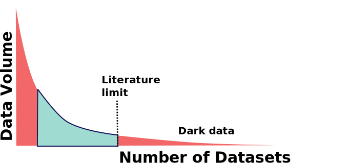
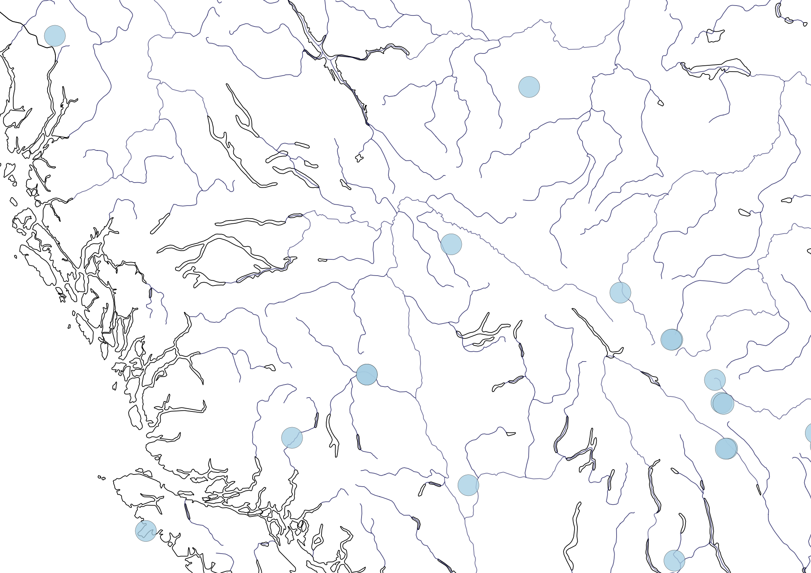
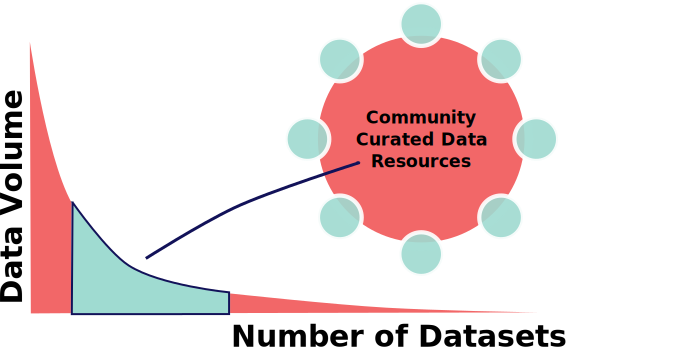
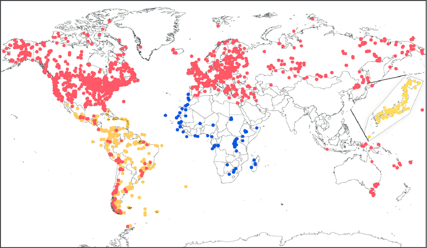
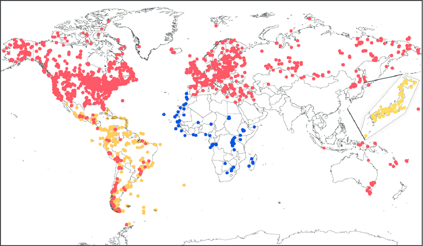
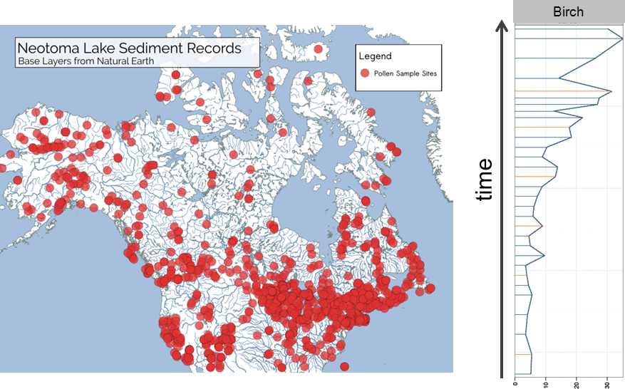
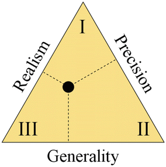
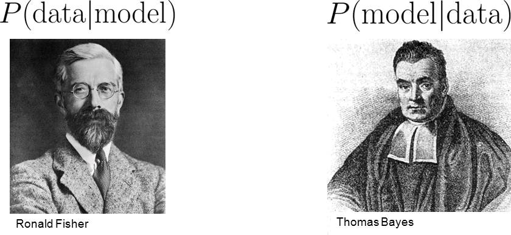
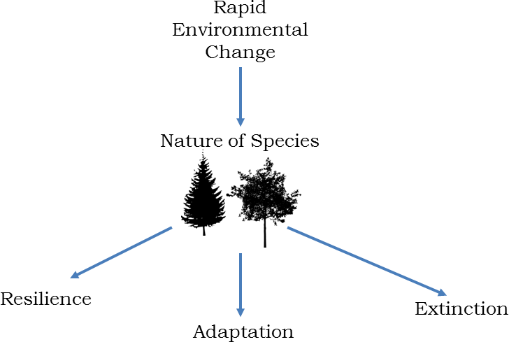

Big-Data Science Challenges and Solutions:
Perspectives from the field of Ecology
Andria Dawson
Mount Royal University
Simon J. Goring
University of Wisconsin - Madison
LIBED, May 16, 2019
Big problems need big science
National Science Foundation Division for Environmental Biology
Award Size
The long tail


Data is Connected
The tail is worth keeping
Neotoma Paleoecology Database
 

Big Data: Four V's Framework
A variety of ecological data
Project management and systems engineering:
critical for success
How can we automate big science that relies on
varied (ecological) datasets?
We can't.
Successful big science (in Ecology) requires:
- Knowing your data, and
- A robust inferential framework.
Know your data.
Data is complicated
Trading off among realism, generality, and precision
Statistical philosophies

But both want to make inference about the model.
All models are wrong, but some are useful.
George Box
We know what is certain only to the extent that we can say, with confidence, what is uncertain.
Hooten and Hobbs
Move, adapt, or die
